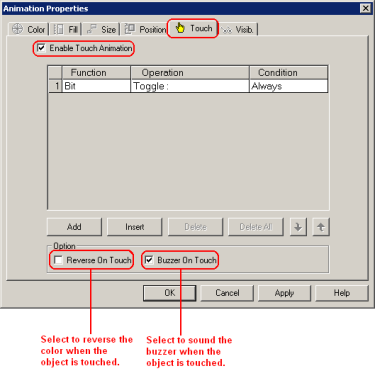
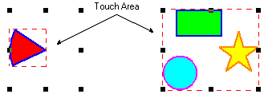

|
|
|
|
|
|
|
|
Draw a graphical object shape to be used as a switch on the panel.
Double-click the object to open the Animation Properties dialog box.

If you are working with a text object, double-click opens the text editor. Right-click the text object and click Animation to open the Animation Properties dialog box.
Select the Touch tab, and select the Enable Touch Animation check box. Select one or more options as necessary.


Although you cannot add Touch Animation to some types of drawing objects, you can group them together and add Touch Animation to the group. However, you cannot add Animation to parts even when they are grouped. For more information, see Section 8.1, Animating Objects.
As shown below, the touch area for an object is the entire area of the object. If several objects are grouped, the touch area for the group will be big enough to contain all the objects. If grouped objects are scattered all over the panel, the group's touch area can be bigger than required. To limit the size of touch areas, you can set Touch Animation on individual objects. For more information, see Section 7.4.10, Actual Size of Graphical Objects.

Double-click the function row to open the Function Setting dialog box.
Select the function of the switch from the Function list box, and define the related properties. For information about the property settings for each function, see Section 9.2.7.2, Setting Up Touch Animation.
Click OK to confirm the settings and return to the Animation Properties dialog box.
Specify the condition for the switch operation. For more information, see Section 9.2.7.3, Setting Up Conditions for Touch Animation.